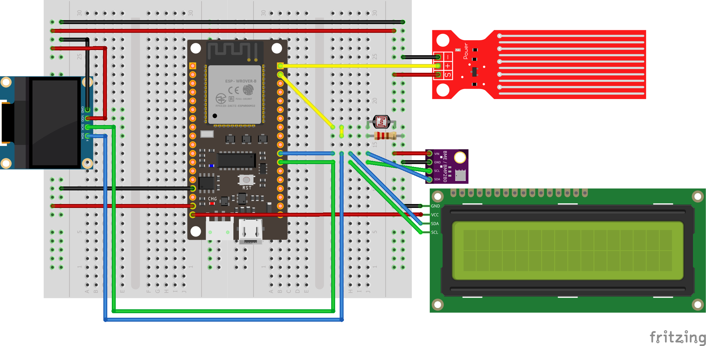

Project Overview¶
Our project focuses on implementing a versatile system that combines various sensors, such as Light Dependent Resistors (LDRs), water sensors, and a BME280 sensor, with an OLED display. The goal is to create a portable device that can monitor environmental conditions, providing real-time data on light levels, water presence, temperature, humidity, and pressure. The system utilizes MicroPython, making it easy to deploy and program.
You can find the Git repository for the project here.
Hardware Description of Demo Application¶
Microcontroller (e.g., ESP8266): The ESP32 serves as the central processing unit running MicroPython, handling sensor data, connecting to Wi-Fi, and driving the display.
OLED Display (e.g., SH1106): Displays information collected from sensors.
Light Dependent Resistors (LDRs): Measure ambient light levels.
Water Sensors: Detect the presence of water.
BME280 Sensor: Measures temperature, humidity, and pressure.
Software Description¶
This project contains a main.py file, as well as several utility classes, both of which can be found in the current documentation, in the original table of contents on the first page.
Instructions¶
- Setting Up the Hardware
Connect LDRs, water sensors, the BME280 sensor, and the OLED display to the microcontroller according to the schematic provided below.
Power up the microcontroller.
- Flashing MicroPython
Download MicroPython firmware.
Flash the firmware.
Connect to the Board’s Serial REPL and interact with MicroPython.
Transfer files to the ESP32 board.
There are several very good tutorials how to install and use MicroPython on an ESP microcontroller, such as this one for Windows.
NOTE: The MicroPython firmware can also be flashed by Thonny IDE.
- Running the Application
Power on the device.
Make sure all files are saved into microcontroller’s memory.
The displays should show real-time data from the sensors, including light levels, water presence, temperature, humidity, and pressure.
- Troubleshooting
The wrapper for functionality must be saved as main.py in order to get the desired behaviour for deepsleep() function.
If the device fails to connect to Wi-Fi, check your credentials and network availability.
Ensure the sensors are correctly wired.
Make sure all packages are up-to-date and not deprecated.
- Demo video
You can find a short video demonstrating the project functionality here!
References¶
MicroPython Documentation: MicroPython
SH1106 OLED Driver Source Code: sh1106.py
ESP8266 Documentation: ESP8266 MicroPython
BME280 Datasheet: BME280 Datasheet